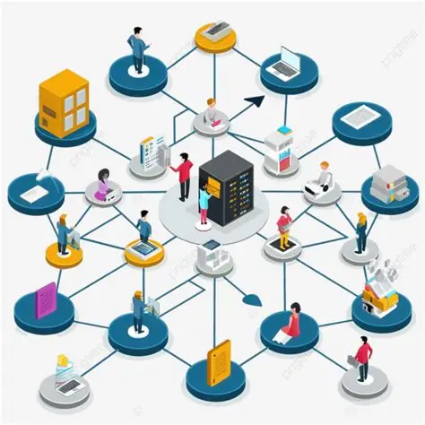
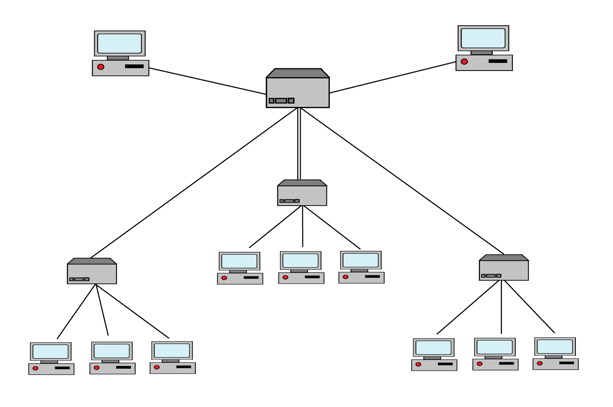

Calculadora VLSM y Subnetting
Herramienta interactiva para realizar cálculos de subneteo, planificación de redes IP y aprendizaje de VLSM.
Ir a la Calculadora
¿Qué puede hacer SubnetLab?
Subneteo automático
Calcula redes, máscaras, hosts y broadcasts rápidamente.
VLSM
Genera subredes de diferentes tamaños optimizando IPs.
Aprendizaje
Ideal para prácticas académicas y estudio de redes.
¿Qué es VLSM?
Variable Length Subnet Mask (VLSM) permite dividir una red en subredes de distintos tamaños para aprovechar mejor las direcciones IP disponibles.
Es ampliamente utilizado en diseño de redes empresariales, laboratorios y administración de infraestructura.
